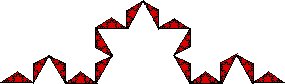

| Replace each small triangle by four still smaller triangles. We see these triangles have base and height 1/3 those of the previous triangles. |
| Thus these triangles have area 1/9 that of the previous triangles, and so (1/9)2 that of the original triangle. |
| The areas of these triangles sum to |
| A2 = |
|  |
By now we should see the general pattern.
Return to Ineffective Ways to Measure.